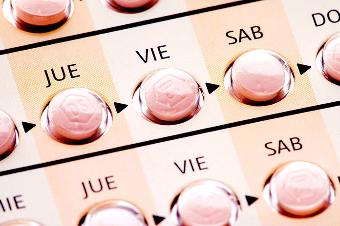

Pastillas anticonceptivas

Las pastillas anticonceptivas son un método anticonceptivo hormonal que se
toma por vía oral. Son uno de los métodos más comunes y efectivos para
prevenir el embarazo.
Tipos
Hay dos tipos principales de pastillas anticonceptivas:
Pastillas combinadas: contienen estrógeno y progestina.
Pastillas de solo progestina: contienen solo
progestina.
Cómo funcionan
Las pastillas anticonceptivas funcionan de varias maneras para prevenir el
embarazo:
Inhiben la ovulación, lo que significa que el ovario no libera un óvulo.
Espesan el moco cervical, lo que dificulta que los espermatozoides
lleguen al óvulo.
Alteran la capa interna del útero, lo que dificulta que el óvulo
fecundado se implante.
Cómo usarlas
Las pastillas anticonceptivas se toman todos los días, durante 21 días.
Luego, se deja un descanso de 7 días, durante los cuales se produce la
menstruación.
Es importante tomar las pastillas anticonceptivas a la misma hora todos
los días. Si olvidas una pastilla, debes tomarla lo antes posible.
Si han pasado más de 24 horas desde que olvidaste la pastilla, debes usar
un método anticonceptivo adicional, como el condón, durante los siguientes
7 días.
Beneficios
Las pastillas anticonceptivas ofrecen varios beneficios, además de la
prevención del embarazo, como:
-
Reducen el riesgo de sufrir endometriosis, quistes ováricos y enfermedad
inflamatoria pélvica.
-
Pueden aliviar los síntomas de la menstruación, como el dolor, la
hinchazón y el sangrado abundante.
-
Pueden ayudar a prevenir el cáncer de ovario y el cáncer de endometrio.
Riesgos
Las pastillas anticonceptivas pueden causar algunos efectos secundarios,
como:
- Náuseas
- Dolor de cabeza
- Cambios de humor
- Aumento de peso
- Sangrado irregular
En casos raros, las pastillas anticonceptivas pueden causar efectos
secundarios graves, como:
-
Trombosis: La trombosis es la formación de un coágulo
de sangre en una vena. La trombosis puede causar graves problemas de
salud, como un accidente cerebrovascular o un infarto. Las pastillas
anticonceptivas combinadas (que contienen estrógeno y progestina)
aumentan el riesgo de trombosis.
-
Accidente cerebrovascular: Un accidente
cerebrovascular es una interrupción del flujo sanguíneo al cerebro.
Los accidentes cerebrovasculares pueden causar graves problemas de
salud, como la pérdida de la capacidad de hablar o caminar. Las
pastillas anticonceptivas combinadas aumentan el riesgo de accidente
cerebrovascular, especialmente en las mujeres mayores de 35 años que
fuman.
-
Colestasis intrahepática: La colestasis intrahepática
es una enfermedad del hígado que puede causar ictericia, picazón y
fatiga. La colestasis intrahepática es un efecto secundario grave de
las pastillas anticonceptivas, pero es muy poco común.
Es importante hablar con tu médico sobre los riesgos y beneficios de las
pastillas anticonceptivas antes de comenzar a tomarlas.